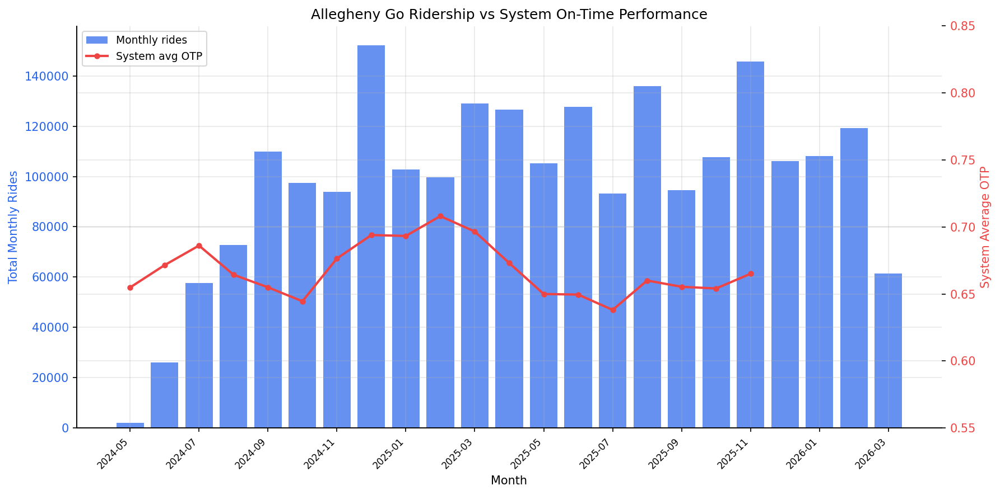
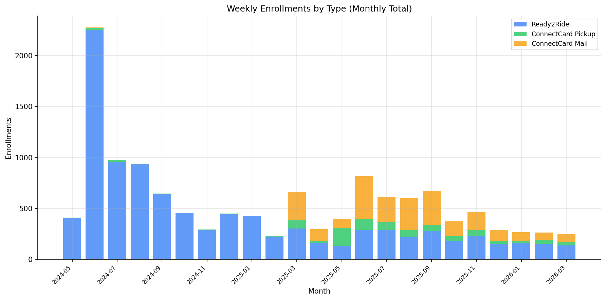
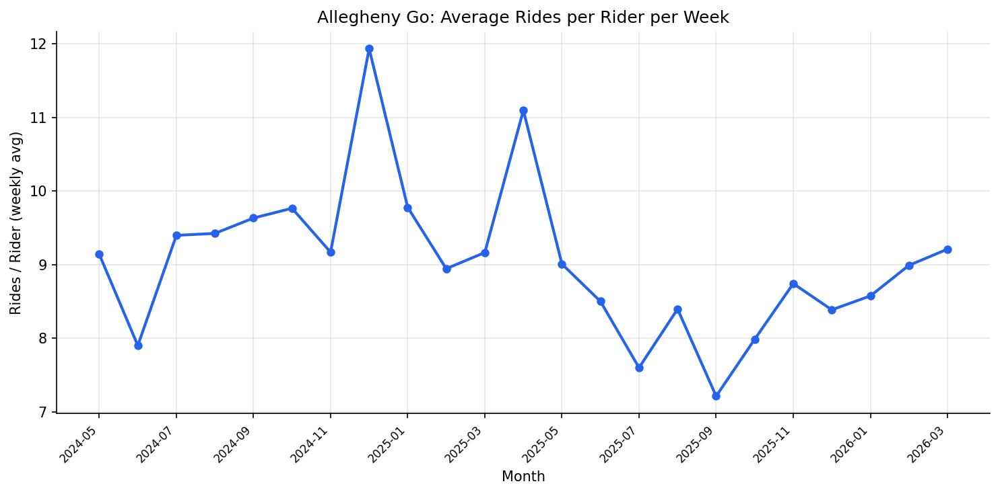

Analysis
43 - Allegheny Go Program Growth
Coverage: 2019-01 to 2025-11 (from otp_monthly).
Built 2026-06-15 11:52 UTC · Commit e5cf673
Page Navigation
Analysis Navigation
Data Provenance
flowchart LR
43_allegheny_go_growth(["43 - Allegheny Go Program Growth"])
f1_43_allegheny_go_growth[/"data/allegheny-go/enrollments_weekly.csv"/] --> 43_allegheny_go_growth
t_otp_monthly[("otp_monthly")] --> 43_allegheny_go_growth
01_data_ingestion[["Data Ingestion"]] --> t_otp_monthly
u1_01_data_ingestion[/"data/routes_by_month.csv"/] --> 01_data_ingestion
u2_01_data_ingestion[/"data/PRT_Current_Routes_Full_System_de0e48fcbed24ebc8b0d933e47b56682.csv"/] --> 01_data_ingestion
u3_01_data_ingestion[/"data/Transit_stops_(current)_by_route_e040ee029227468ebf9d217402a82fa9.csv"/] --> 01_data_ingestion
u4_01_data_ingestion[/"data/PRT_Stop_Reference_Lookup_Table.csv"/] --> 01_data_ingestion
u5_01_data_ingestion[/"data/average-ridership/12bb84ed-397e-435c-8d1b-8ce543108698.csv"/] --> 01_data_ingestion
t_allegheny_go_weekly[("allegheny_go_weekly")] --> 43_allegheny_go_growth
d1_43_allegheny_go_growth(("polars (lib)")) --> 43_allegheny_go_growth
d2_43_allegheny_go_growth(("scipy (lib)")) --> 43_allegheny_go_growth
classDef page fill:#dbeafe,stroke:#1d4ed8,color:#1e3a8a,stroke-width:2px;
classDef table fill:#ecfeff,stroke:#0e7490,color:#164e63;
classDef dep fill:#fff7ed,stroke:#c2410c,color:#7c2d12,stroke-dasharray: 4 2;
classDef file fill:#eef2ff,stroke:#6366f1,color:#3730a3;
classDef api fill:#f0fdf4,stroke:#16a34a,color:#14532d;
classDef pipeline fill:#f5f3ff,stroke:#7c3aed,color:#4c1d95;
class 43_allegheny_go_growth page;
class t_allegheny_go_weekly,t_otp_monthly table;
class d1_43_allegheny_go_growth,d2_43_allegheny_go_growth dep;
class f1_43_allegheny_go_growth,u1_01_data_ingestion,u2_01_data_ingestion,u3_01_data_ingestion,u4_01_data_ingestion,u5_01_data_ingestion file;
class 01_data_ingestion pipeline;
Findings
Findings: Allegheny Go Program Growth
Summary
The Allegheny Go program grew rapidly from 262 rides in its first week (May 2024) to over 30,000 rides per week by late 2025, with 2.27 million total rides to date. Program ridership does not correlate with system-level OTP (Pearson r = 0.129, p = 0.600, n = 19 months), suggesting the program's growth is driven by enrollment expansion rather than service quality fluctuations.
Key Numbers
- 2,274,373 total rides across 96 weeks (May 2024 – March 2026)
- Peak monthly riders: ~3,375 unique riders
- Rides per rider per week: 8–12, averaging ~9.5 (consistent utilization)
- Pearson r (monthly rides vs system OTP): 0.129 (p = 0.600, n = 19)
- Ready2Ride dominated early enrollment (2,300 in June 2024 launch month); ConnectCard Mail surged starting March 2025
Observations
- Rapid S-curve growth. The program went from near-zero to ~100K monthly rides in five months (May–October 2024), then plateaued at 100K–130K monthly rides. The December 2024 spike to 152K rides appears to be a 5-week month effect.
- Utilization is stable. Rides per rider per week hovers between 8 and 12 across the full period, suggesting participants use the program consistently once enrolled. No sign of "churning" (enrolling but not riding).
- Enrollment shifted from Ready2Ride to ConnectCard. The launch was Ready2Ride-dominated (digital-first). ConnectCard Mail enrollments appeared in March 2025 and now represent the largest enrollment channel, suggesting the program expanded to less digitally-connected populations.
- No OTP correlation. System OTP fluctuates between 0.64 and 0.71 during the program period, but these fluctuations are uncorrelated with ridership growth. The program's trajectory is a monotonic ramp-up regardless of service quality.
Caveats
- Only 19 months of overlap between Allegheny Go ridership and OTP data limits statistical power for the correlation test.
- Weekly-to-monthly conversion assigns each week to its
week_startmonth; weeks spanning month boundaries are attributed to the earlier month. - System OTP is an unweighted average across all routes. Allegheny Go riders likely concentrate on a subset of routes, so route-specific OTP would be more informative (but route-level program data is not available).
- The December 2024 spike is likely a calendar artifact (5 weeks in that month), not a genuine ridership increase.
Validation
- Data source verified. Ridership from
allegheny_go_weeklytable (pipeline 08); OTP fromotp_monthlytable. - Temporal scope matches. Both datasets filtered to their natural ranges; overlap period (May 2024 – Nov 2025) explicitly identified.
- Null handling. System OTP is null for months outside OTP coverage; these months are excluded from correlation but included in growth charts.
- Aggregates sanity-checked. Total rides (2.27M) matches the dashboard KPI (2.26M); small difference due to rounding.
- Direction of effects checked. Rising ridership with flat OTP is expected for a new enrollment-driven program; a strong correlation would have been surprising and warranted investigation.
Output

Dual-axis chart of program ridership and system OTP.

Stacked bar of enrollment types over time.

Rides-per-rider utilization over time.
No interactive outputs declared.
Monthly Allegheny Go metrics alongside system OTP.
Preview CSV
Methods
Methods: Allegheny Go Program Growth
Question
How has the Allegheny Go fare program grown since its May 2024 launch, and does its ridership growth track with or diverge from system-level on-time performance?
Approach
- Load weekly ridership from the
allegheny_go_weeklydatabase table and convert to monthly totals by assigning each week to its calendar month. - Compute monthly system-average OTP from
otp_monthly. - Load weekly enrollments from CSV, convert to monthly.
- Overlay monthly rides on system OTP using a dual-axis chart for the overlap period (May 2024 through November 2025).
- Track rides-per-rider as a utilization metric over time.
- Build an enrollment-by-type stacked area chart.
Data
| Name | Description | Source |
|---|---|---|
allegheny_go_weekly |
Weekly rides and unique riders | prt.db table |
enrollments_weekly.csv |
Weekly enrollments by type | data/allegheny-go/ |
otp_monthly |
Monthly OTP per route | prt.db table |
Output
Source Code
|
Sources
| Name | Type | Why It Matters | Owner | Freshness | Caveat |
|---|---|---|---|---|---|
| data/allegheny-go/enrollments_weekly.csv | file | Weekly Allegheny Go enrollment counts by enrollment type. | Local project data owner not specified. | Snapshot file; refresh by rerunning its pipeline step. | May lag upstream source updates. |
| otp_monthly | table | Primary analytical table used in this page's computations. | Produced by Data Ingestion. | Updated when the producing pipeline step is rerun. | Coverage depends on upstream source availability and ETL assumptions. |
Upstream sources (5)
|
|||||
| allegheny_go_weekly | table | Primary analytical table used in this page's computations. | Project pipeline owner not linked. | Refresh cadence unknown. | Coverage depends on upstream source availability and ETL assumptions. |
| polars | dependency | Runtime dependency required for this page's pipeline or analysis code. | Open-source Python ecosystem maintainers. | Version pinned by project environment until dependency updates are applied. | Library updates may change behavior or defaults. |
| scipy | dependency | Runtime dependency required for this page's pipeline or analysis code. | Open-source Python ecosystem maintainers. | Version pinned by project environment until dependency updates are applied. | Library updates may change behavior or defaults. |